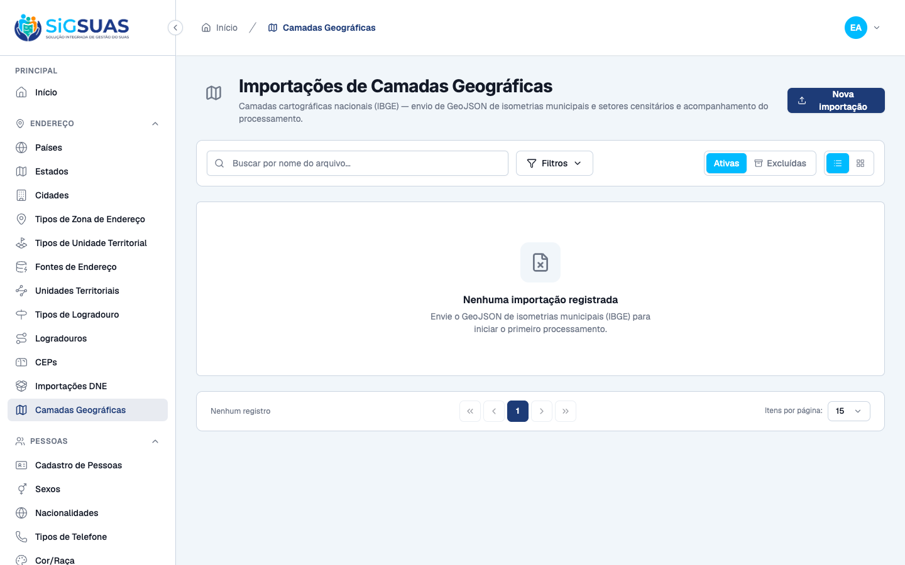
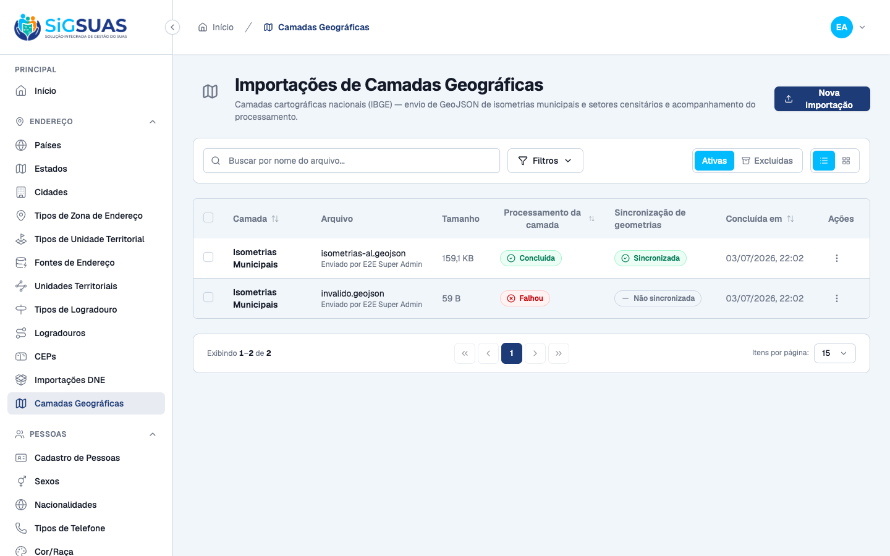
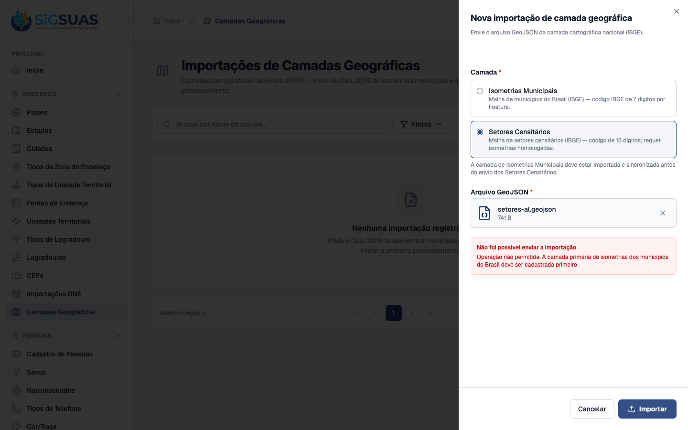
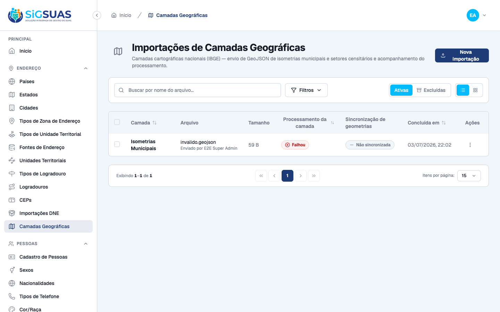
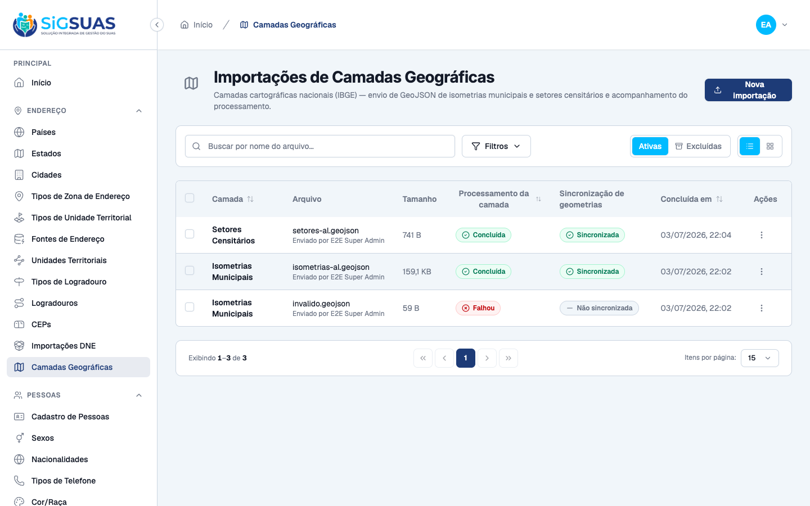

4 critérios de aceite evidenciados, todos por navegador (dirigindo o Painel Global) e corroborados pela suíte automatizada. CA-ISO e CA12 foram ainda validados por smoke end-to-end em PostGIS real (ST_GeomFromGeoJSON): a importação da isometria de Alagoas gerou 102 city_geometries e a dos setores censitários gerou 3 census_sectors + 3 census_sector_geometries, todos vinculados às cidades pelo código IBGE (sem chave estrangeira). Apêndice: 84 testes Pest (344 asserções), 100% verdes.
| CA | Critério | Status |
|---|---|---|
| CA-ISO | Importação da isometria municipal a partir do GeoJSON | ATENDIDO · navegador |
| CA11 | Bloqueio de sequência de camadas | ATENDIDO · navegador |
| CA-VAL | Rejeição de GeoJSON inválido | ATENDIDO · navegador |
| CA12 | Sucesso no cadastramento das camadas (setores censitários) | ATENDIDO · navegador |
Critério (Gherkin): Dado que sou um Administrador logado no Painel Global e possuo um GeoJSON de municípios com a chave IBGE em properties.id, Quando faço o upload e o processamento conclui, Então cada Feature válida é materializada como uma geometria de município em city_geometries e vinculada à cidade correspondente pelo código IBGE (sem chave estrangeira).
Como foi testado: No Painel Global, menu Camadas Geográficas → Nova importação → camada Isometrias Municipais → anexar isometrias-al.geojson (102 municípios) → Importar. O worker da fila geo processa (Concluída, feature_count=102); a ação Sincronizar distribui as geometrias (Sincronizada).


Critério (Gherkin): Dado que sou um Administrador logado no Painel Global e a base nacional de isometrias municipais NÃO foi cadastrada e homologada, Quando tento carregar o arquivo de setores censitários e clico em processar, Então o sistema bloqueia o envio e emite o alerta de negócio: "Operação não permitida. A camada primária de isometrias dos municípios do Brasil deve ser cadastrada primeiro".
Como foi testado: Com nenhuma isometria homologada, abrir Nova importação → selecionar a camada Setores Censitários → anexar um GeoJSON de setores → Importar.

Critério (Gherkin): Dado que carreguei um arquivo que não é um FeatureCollection válido, Quando o job de processamento executa a validação estrutural, Então a importação recebe status "failed" com uma mensagem de erro explicativa e nenhuma geometria é gravada na tabela de negócio.
Como foi testado: Importar como Isometrias Municipais um arquivo estruturalmente inválido (invalido.geojson, type ≠ FeatureCollection). O worker processa e aplica a validação estrutural (RN-VAL).

Critério (Gherkin): Dado que a base de isometrias municipais está homologada (importada e sincronizada) e que realizo a carga do arquivo de malha de setores censitários do IBGE, Quando o processamento global termina, Então o sistema vincula essas divisões geográficas aos respectivos municípios da plataforma para consumo imediato na Área do Cliente.
Como foi testado: Com a isometria já Sincronizada, o bloqueio da CA11 é liberado: Nova importação → camada Setores Censitários → anexar setores-al.geojson (códigos de 15 dígitos) → Importar → Sincronizar. O sistema resolve o município pelo prefixo de 7 dígitos do código do setor.

PASS Tests\Unit\Services\Geo\GeoJsonValidationServiceTest ✓ it returns normalized features for a valid municipal feature collec… 0.07s ✓ it accepts a 15-digit code and MultiPolygon for the census sector l… 0.01s ✓ it accepts a numeric properties.id normalizing it to string 0.01s ✓ it processes a large feature collection without loading the whole d… 0.01s ✓ it rejects content that is not valid json 0.01s ✓ it rejects a document whose type is not FeatureCollection 0.01s ✓ it rejects a feature collection without features with dataset "empt… 0.01s ✓ it rejects a feature collection without features with dataset "miss… 0.01s ✓ it rejects a feature collection without features with dataset "wron… 0.01s ✓ it rejects a feature without properties.id 0.01s ✓ it rejects an ibge code outside the digit pattern of the layer with… 0.01s ✓ it rejects an ibge code outside the digit pattern of the layer with… 0.01s ✓ it rejects an ibge code outside the digit pattern of the layer with… 0.01s ✓ it rejects an ibge code outside the digit pattern of the layer with… 0.01s ✓ it rejects a missing or unsupported geometry with dataset "missing… 0.01s ✓ it rejects a missing or unsupported geometry with dataset "null geo… 0.01s ✓ it rejects a missing or unsupported geometry with dataset "point ge… 0.01s ✓ it rejects a missing or unsupported geometry with dataset "linestri… 0.01s ✓ it rejects a missing or unsupported geometry with dataset "empty co… 0.01s PASS Tests\Unit\Services\Geo\GeoLayerSyncServiceTest ✓ it resolves city_id by cities.ibge_code without any foreign key 0.27s ✓ it counts city_not_found as skipped without writing business rows 0.01s ✓ it computes the bounding box centroid of the loaded polygon 0.01s ✓ it assigns the IBGE address source to the synced rows 0.01s ✓ it resolves the census sector city by the 7-digit prefix of the sec… 0.02s ✓ it deactivates active rows that are absent from the current load 0.01s ✓ it deactivates the paired geometry when a census sector becomes abs… 0.01s ✓ it deduplicates repeated ibge codes within the same load keeping th… 0.01s PASS Tests\Feature\Api\GeoLayerImportControllerTest ✓ it lists geo layer imports 0.05s ✓ it filters geo layer imports by layer_type 0.01s ✓ it filters geo layer imports by status 0.01s ✓ it shows a geo layer import with creator 0.01s ✓ it stores a municipal isometry import and dispatches the job on the… 0.03s ✓ it validates required fields on store 0.01s ✓ it rejects an invalid layer_type 0.01s ✓ it rejects a non-geojson file 0.01s ✓ it rejects a new import while another is pending or processing 0.01s ✓ it blocks storing a census sector layer while the municipal isometr… 0.01s ✓ it blocks the census sector layer when the isometry is completed bu… 0.01s ✓ it accepts a census sector layer once the municipal isometry is hom… 0.01s ✓ it soft deletes a geo layer import while preserving its stored file 0.01s ✓ it blocks deleting a processing import 0.02s ✓ it requires authentication 0.01s ✓ it forbids access without permissions 0.01s ✓ it forbids destroy without the destroy permission 0.01s ✓ it lists only trashed imports with filter[trashed]=only 0.02s ✓ it bulk destroys imports in a single soft-delete call 0.01s ✓ it rejects the whole batch when an id is processing 0.01s ✓ it validates ids on bulk destroy 0.01s ✓ it restores a soft-deleted import resolving the trashed binding 0.01s ✓ it returns 422 when restoring an import that is not trashed 0.01s ✓ it force deletes a trashed import removing the record and its store… 0.01s ✓ it logs a single force_destroyed activity without a duplicate delet… 0.01s ✓ it retries a failed import requeueing the job with the stored geojs… 0.01s ✓ it returns 422 when retrying an import that is not failed 0.01s ✓ it returns 422 when retrying an import whose geojson is missing fro… 0.01s ✓ it queues the layer sync for a completed import on the geo queue 0.01s ✓ it returns 422 when syncing an import that is not completed 0.01s ✓ it returns 422 when the import is already queued or syncing with da… 0.01s ✓ it returns 422 when the import is already queued or syncing with da… 0.01s ✓ it returns 422 when another import is already queued or syncing wit… 0.01s ✓ it returns 422 when another import is already queued or syncing wit… 0.01s ✓ it forbids sync without the sync permission 0.01s ✓ it exposes the sync state in the resource 0.01s PASS Tests\Feature\Jobs\ProcessGeoLayerImportJobTest ✓ it processes a valid municipal geojson into staging features 0.01s ✓ it logs a processed activity with layer_type and feature_count 0.01s ✓ it replaces the staging on reprocess without duplicating features 0.01s ✓ it processes a census sector geojson with 15-digit codes into stagi… 0.01s ✓ it fails the import for structurally invalid geojson with dataset "… 0.01s ✓ it fails the import for structurally invalid geojson with dataset "… 0.01s ✓ it fails the import for structurally invalid geojson with dataset "… 0.01s ✓ it fails the import for structurally invalid geojson with dataset "… 0.01s ✓ it fails the import for structurally invalid geojson with dataset "… 0.01s ✓ it fails the import for structurally invalid geojson with dataset "… 0.01s ✓ it fails the import for structurally invalid geojson with dataset "… 0.01s ✓ it fails the import when the geojson file is missing from storage 0.01s PASS Tests\Feature\Jobs\SyncGeoLayerJobTest ✓ it syncs a municipal isometry import into city_geometries resolving… 0.01s ✓ it marks syncing at the start of the handle before running the pipe… 0.01s ✓ it logs a synced activity with the summary 0.01s ✓ it resyncs idempotently updating existing geometries and deactivati… 0.01s ✓ it syncs a census sector import distributing sectors to cities by t… 0.01s ✓ it resyncs census sectors idempotently without duplicating sectors… 0.01s ✓ it deactivates the paired census_sector_geometries row when its sec… 0.01s ✓ it marks the sync as failed recording the error message with datase… 0.01s ✓ it marks the sync as failed recording the error message with datase… 0.01s Tests: 84 passed (344 assertions) Duration: 1.54s